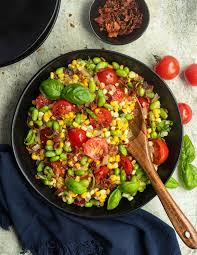

Succotash

Native American Succotash
A quintessential American dish that’s chock-full of vegetables like onion, corn, pepper, and tomatoes, with just a bit of bacon for taste. Serve this succotash as a side or load it up with more goodies for a savory entrée.
Ingredients
- 1 tbsp olive oil
- 1 cup smoked bacon, diced
- ½ brown onion, finely diced
- 2 cups lima beans
- 2 cups corn kernels
- 1 cup cherry tomatoes, sliced
- 1 red pepper, diced
- ½ tsp garlic powder
- 1 tsp smoked paprika
- 1 tsp fresh sage, chopped
- 2 tsp fresh parsley, chopped
- 10 basil leaves
- 1 tbsp salted butter
- salt and pepper
- Pour olive oil into a large pan. Over MEDIUM heat, fry the bacon and onion for 6-8 minutes, until the onion is translucent and the bacon is a little crispy.
- Add the lima beans, corn, tomatoes, peppers, garlic powder, and smoked paprika, and fry for another 5 minutes.
- Add the fresh herbs, butter, salt, and pepper, and serve warm.
Enjoy!